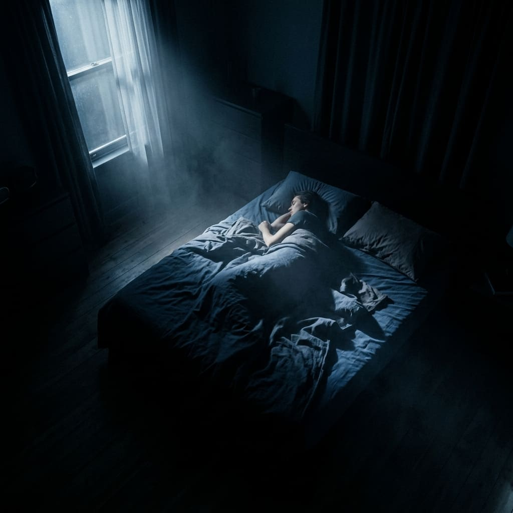

Reduza o hiperalerta antes de dormir.
Tenha mais segurança para atravessar noites difíceis.
Seu corpo até pede descanso.
Mas a mente não recebe o sinal de que o dia terminou.
Por isso, a cama vira tensão.
A madrugada parece ameaça.
E tentar dormir à força só aumenta o alerta.
"Fecho os olhos e o dia inteiro volta. Fico replayando tudo."
Acorda às 2h, 3h, 4h. O coração dispara. O desespero cresce.
Quanto mais tenta relaxar, mais a mente acelera. É contraditório.
Amanhã você acorda destruído. E a noite seguinte é a mesma coisa.
Você não tem problema com sono. Tem problema com hiperalerta emocional noturno.
Tentar forçar o sono piora tudo.
O sono não entra enquanto o alerta não baixa.
Essa é a causa real. E tem solução.
"Deito na cama e o corpo desliga, mas a mente continua acordada. É esgotador."
— Relato real, Reddit BrasilNão tente forçar o sono. Primeiro você precisa reduzir o alerta. Só depois o sono chega.
Fechar as abas mentais antes de deitar. Não deixar nada pendente.
Baixar o estado de vigilância sem brigar com a própria cabeça.
Se acordar de madrugada, saber exatamente o que fazer para voltar a dormir.
O Plano Noite Blindada não é um curso para consumir uma vez.
É uma estrutura de apoio para usar quando sua mente entra em alerta.
Um refúgio guiado para noites difíceis.
O Freio Noturno muda a ordem: primeiro você reduz o alerta, depois o sono encontra espaço.
Você não está comprando conteúdo. Está garantindo um lugar para voltar.
Quando a noite apertar, você já sabe onde voltar.
Método completo.
Passo a passo.
Guiado para dormir.
Como voltar a dormir.
Técnica rápida.
Socorro imediato.
Registro.
Sabotadores.
Intensivo.
Acordar às 3h era devastador. Com o protocolo, consegui voltar a dormir sem pânico. A noite parou de ser ameaça.
Chegava na cama acelerado. O Freio me ensinou a desacelerar antes. Mudou como eu encaro a noite.
O áudio parece que tem alguém ali comigo. Em uma semana, a noite ficou menos pesada. Menos assustadora.
Por menos do que um app mensal, você garante 12 meses de apoio real.
Menos de R$ 2,50 por mês para ter um lugar para voltar quando a noite apertar.
O Freio Noturno não é mais uma técnica genérica. É feito especificamente para quem já tentou de tudo e não conseguiu. A lógica é outra: primeiro você baixa o alerta, depois o sono chega.
Exatamente. O Plano foi criado para isso. A Ponte da Madrugada e a biblioteca de áudios são para você usar quando acordar às 2h, 3h ou 4h, e conseguir voltar a dormir.
O preço não define profundidade. Ele foi pensado para tornar esse apoio acessível, simples de manter e fácil de decidir. Você não está pagando por promessa exagerada. Está entrando em uma estrutura prática para noites reais.
Esse plano foi pensado justamente para isso. Não precisa consumir tudo de uma vez. Você volta nele quando precisar. É um lugar para voltar, não um curso para finalizar.
Todo conteúdo é prático. Áudios de 2-10 minutos. Checklists rápidos. Rotinas diretas. Na hora de dormir, você não quer ler texto longo. Nem precisa.
Um lugar seguro para voltar quando a noite apertar.
12 meses de apoio noturno • menos de R$ 2,50/mês
Se não fizer sentido para você, basta pedir o cancelamento. Simples, sem burocracia.
12 meses de apoio • Garantia de 7 dias • Um lugar para voltar quando precisar